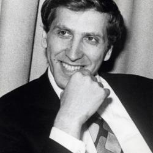

The Genius of Bobby Fischer
Bobby Fischer (1943-2008) remains a legendary figure in the chess world. As the first and only American World Chess Champion, Fischer inspired generations of players in the U.S. and around the world.
Career Highlights
- At age 14, Fischer won his first U.S. Chess Championship with a perfect score.
- He became the youngest Grandmaster at 15, a record held until 1991.
- In 1972, Fischer won the World Chess Championship in an iconic Cold War-era match against Boris Spassky.
- His book, My 60 Memorable Games, is considered a chess classic.
Fischer’s most famous quote captures the essence of his approach: "Chess demands total concentration."